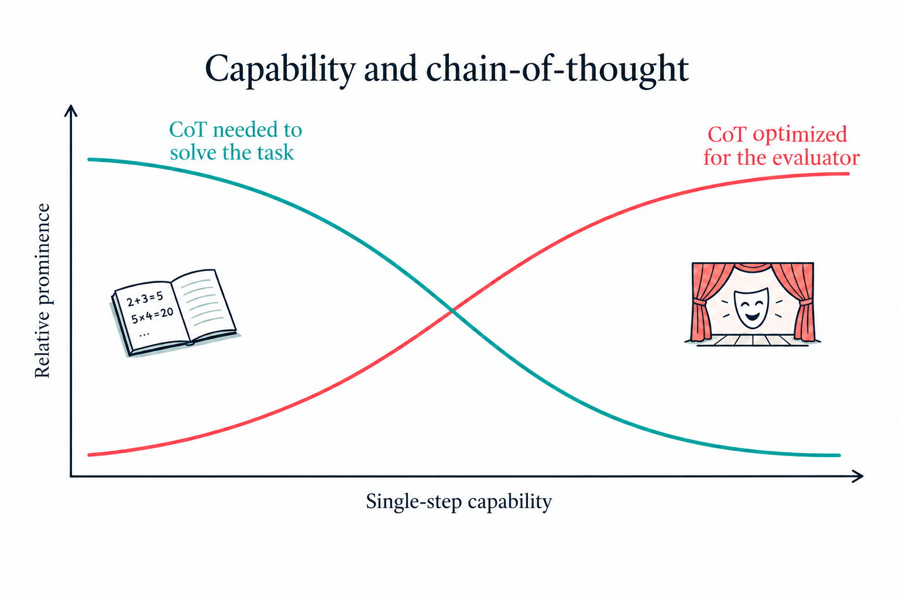

The fragile opportunity
Korbak et al. in their paper on the fragile opportunity of CoT monitorability argued there's no guarantee that the current degree of visibility will persist. We are going to have to study to maintain and preserve CoT. Its purpose was always a scratchpad; it was a simple prompting technique.
A simple argument is:
As the models become more powerful, won't they require less tokens to express their thoughts? Why would we expect all reasoning to be contained in the reasoning trace? It was never supposed to be exhaustive, and it will move only away from giving us an actual view of the model's reasoning.
In Ryan Greenblatt's latest X post: OpenAI has stopped providing GPT-6-Astra without the reasoning=None option. And OpenAI does so in the spirit of keeping the model safe. Astra doesn't need CoT as much.
This actually calls for, per Ryan, even more need to study model capabilities without CoT. He verbalizes the intuitions I have picked up across so many discussions:
The model can still latently reason without verbalizing it when reasoning is on, and the reasoning-on case is the more concerning one anyway given the higher capabilities.
Ryan Greenblatt

Neel Nanda recently hinted at the importance of preserving the CoT:
CoT is our best current tool for safety & interpretability, losing it would be a major tragedy.
Neel Nanda
However, it increasingly appears that this tool was just for a moment in time. Of course, we can engineer and work hard to preserve it, but scaling things up and maintaining the integrity of the method itself seems like a problem of its own.
Korbak et al. already admits:
For these reasons, we recommend investment into CoT monitoring only as an addition to existing safety research directions and not as a replacement.
Korbak et al.
By relying on CoT, we are missing out on developing other safety methods.
There are two key reasons why CoTs may be monitorable:
- Necessity to think out loud.
- Propensity to think out loud.
CoT is simply not a panacea. Just like the activations at a particular layer can't tell you exhaustively about the model's reasoning, CoT is an incomplete representation. But they don't need to completely represent the reasoning process for them to be useful as an additional safety layer. CoT can absolutely shed light on a model's internal reasoning process.